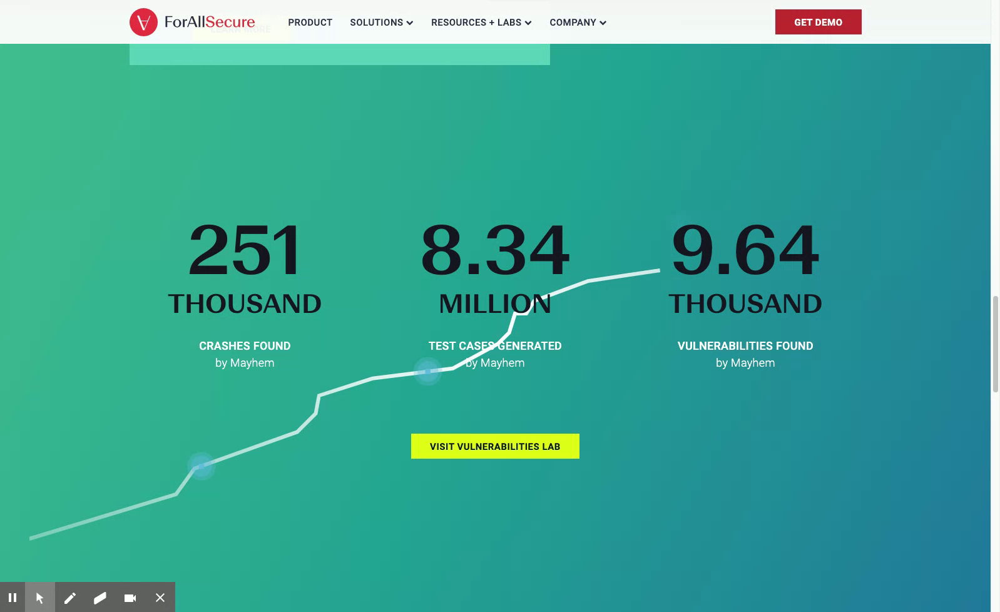

Give complexity
a shape.
A branching map makes an abstract process tangible. Each new input has somewhere to go.
Complex technology.
A story you can follow.
Modern motion study based on my earlier ForAllSecure website work.
Original work + today’s takeFollow the unexpected
Vary an input. Follow the paths it opens. Turn an unexpected result into something you can reproduce.
Select an input to follow its path.
Story playing · select a stage to explore at your own pace
Conceptual paths and sample inputs. No live testing.
A branching map makes an abstract process tangible. Each new input has somewhere to go.
One change in color turns exploration into discovery. The animation tells you where to look.
Trace the same path again. Connect the input to the outcome, and make the product idea memorable.
The work behind the study
My earlier ForAllSecure work brought the website to life through UI development and animation. The original experience paired a teal-to-blue gradient, glowing particles, and a rising line with prominent product counters.
This new study revisits that visual language. A traveling point becomes a guide through a focused, interactive product story.
A new interpretation of the original motion language, informed by archived source and recordings.

This is an independent portfolio recreation, not the current ForAllSecure website or product interface. All examples are illustrative; historical product counts are not presented as current results. My role here is website development and animation.